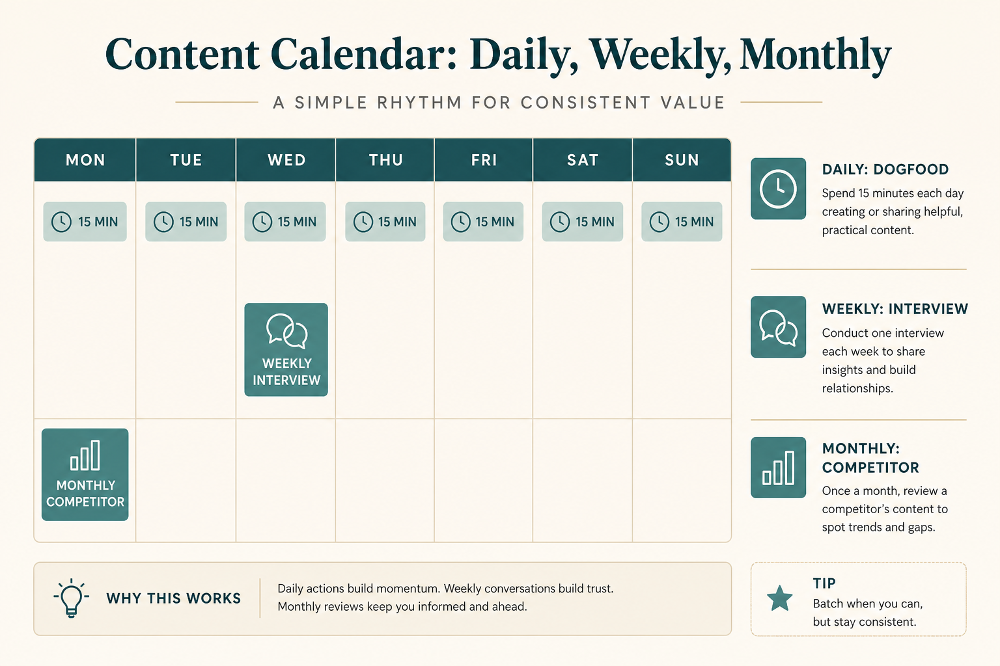

Product intuition is a calendar habit, not a talent
Source: Julie Zhuo (@joulee)
original post
What it claims
The only way she knows to build product intuition is: use the product as a real user, and continually research the customer. She lists 12 timed practices (daily dogfood 15 min, session replays, dashboard, weekly interviews/tickets/analysis, monthly competitor use and sales ride-alongs). Half the list ≈ 5% of the week.
Why it matters for a PO
Prioritization and stakeholder debates collapse without firsthand product + customer contact. This is a PO operating system, not a research team luxury.
3 takeaways
- Dogfood daily as a real user.
- Mix live customers, tickets, data, and competitors.
- 5–15% of the week is enough if it’s scheduled.
Practice this week
Block 15 min/day dogfood + 30 min this week on one real customer workflow interview; write 3 intuition notes into the next refinement.